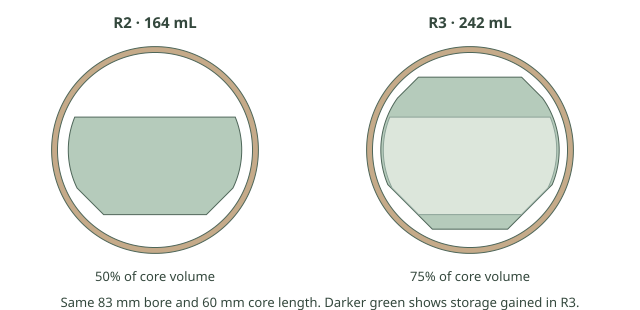
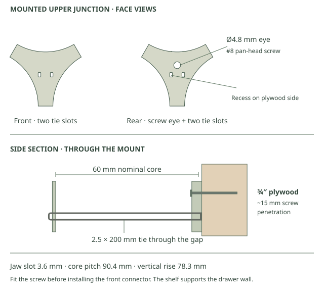

Five-cell example · drag to orbit, scroll to zoom
Storage inside one core

242 mL level-full, or 228 mL with 5 mm left below the rim. The top opening is 43.8 mm wide. A small external pull keeps the writing face intact.
Rear mounting detail

Download deep drawer 3MFFit print 3MFPrinted hardware · both ends
- Shared base pair
- 8.95 g · 21 min
- With wall mount
- 9.08 g · 23 min
- Upper junction pair
- 7.26 g · 21 min
- With wall mount
- 7.43 g · 24 min
One-time outside end set: 8.93 g per bank. Separate drawer: 40.49 g, 56 min. Estimates: P1S / PLA, 0.20 mm, 3 walls, 15% gyroid, supports off.
Starter cell 3MF
From one cell to a bank
- Start with a drawer and four half-feet: a left and right at both ends. Seat the cores with their front rims aligned. The 3.6 mm jaw slot is sized for a nominal 83 mm ID × 88 mm OD × 60 mm core. Test the fit on your cardboard first.
- To extend sideways, move the outer half-feet to the new edge. A shared flat base pair replaces them between the two bottom cores. Use the edge set once per bank.
- For each upper core, fit one three-way pair between its two supporting cores, at the front and rear. The single curved side with the two internal drawer ledges faces up. Test drawer travel, then tack the jaws to the rims with small drops of CA, leaving outside end pieces movable if you plan to expand.
Attach to the backboard
At selected joints, substitute the upper mount pair or base mount pair. Thread a 2.5 × 200 mm cable tie through the rear slots, with the crosspiece in the recessed back channel. Screw the rear connector to ¾″ plywood using a #8 × ¾″ pan-head wood screw through the 4.8 mm eye. Install the front connector and close the tie through its two small slots. Both tie legs run in the gap between the cores; keep the locking head on the front face.
Use separated anchor points on a shelf-supported bank. Fasten before installing the front pieces so the driver has access. Physical fit, load capacity and anchor spacing are untested.
Drawer
Deep drawer 3MF · 31 mm above center, plain writing face and an external finger ledge. Use R3 upper junctions with the deep drawer; the flat base and mounting position are unchanged. If you already printed the R2 upper junctions, the 229 mL drop-in drawer fits them. Support the drawer near full extension.